Pixel-exact ANSI
BadTerm draws its own screen in the IBM VGA fonts, 8 or 9 dots wide, from 80x25 to 132x52. iCE colors, blinking, 256 and 24-bit color, sixel pictures, and SyncTERM's palettes and the fonts BBSes send.
// BBS client · Windows · macOS · Linux
The badass terminal.
Call the BBSes that are still out there, over telnet, SSH or a real modem, and see them the way they looked in 1994: the IBM VGA fonts pixel for pixel, iCE colors, ANSI music, and the glow of a CRT.
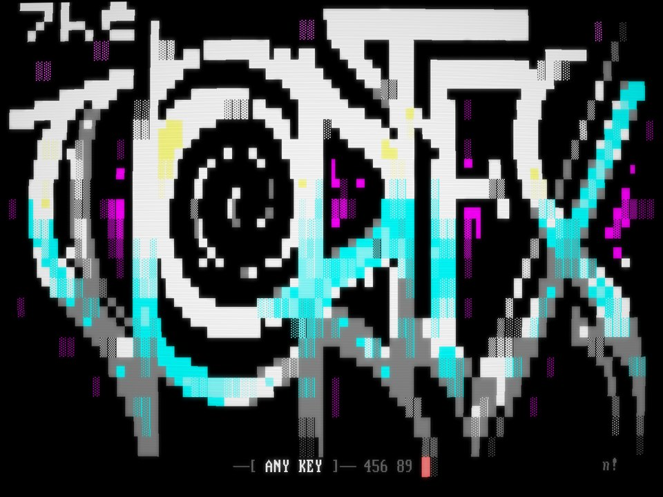
01 · Features
BadTerm draws its own screen in the IBM VGA fonts, 8 or 9 dots wide, from 80x25 to 132x52. iCE colors, blinking, 256 and 24-bit color, sixel pictures, and SyncTERM's palettes and the fonts BBSes send.
Alt-P for the look of a CRT: glowing text, scanlines and curved glass, in color or on a green or amber monitor, for every BBS or just the ones you choose.
Telnet, telnet over TLS, raw TCP and RLogin, and SSH with keys, your agent or a password. Passwords can live in your system's keychain.
Point BadTerm at a modem on a serial port, a WiFi modem or tcpser, and it dials the number: ATDT, CONNECT, and a redial when the line is BUSY.
ZMODEM starts by itself and resumes where it stopped. YMODEM, YMODEM-G, XMODEM and Kermit are a keypress away. Drop files on the window to upload.
Search, sort, pin favorites, auto-login, macros and settings for each BBS. Bring your list from SyncTERM, NetRunner, Qodem, EtherTerm, MagiTerm or the Telnet BBS Guide.
10,000 lines of scrollback, even of screens the BBS cleared. Capture every call as ANSI or as a text log, save the screen as .ans or .png, and view art with its SAUCE credits.
Synchronet's graphical doors draw their pictures, play their sound and music, and take the mouse, just as in SyncTERM. ANSI music plays as a PC speaker would, and the bell beeps, flashes or keeps quiet.
Twelve color schemes for BadTerm's own screens, Bad Cluster's among them, or color every part yourself, as in QModem and Telix. Share your colors as a theme file, and download more.
02 · Systems
Not just ANSI. BadTerm speaks the graphics and character sets of the other machines the BBS scene ran on, and the pictures, sound and fonts of today's boards.
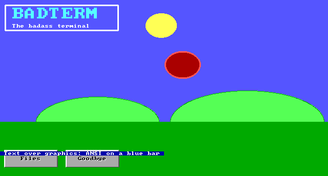
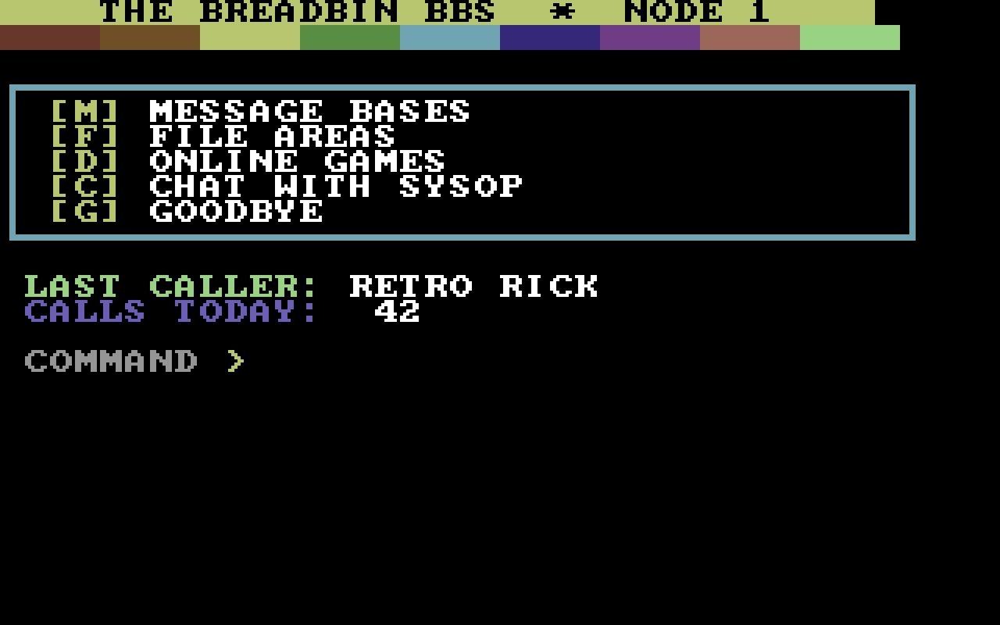
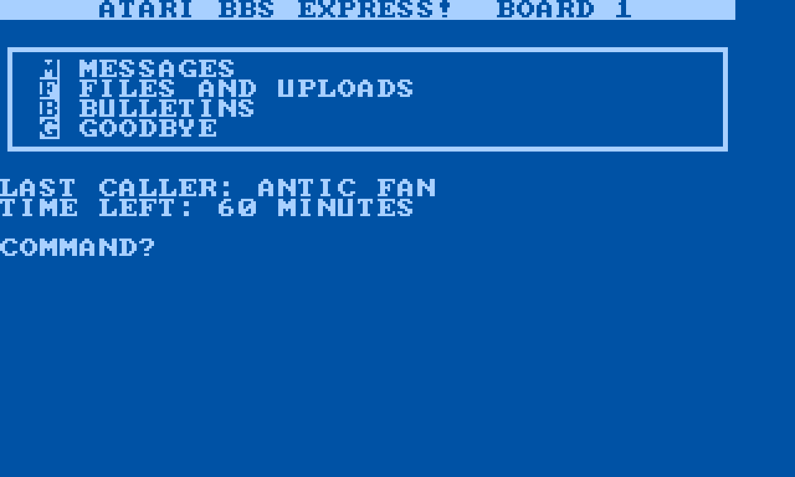
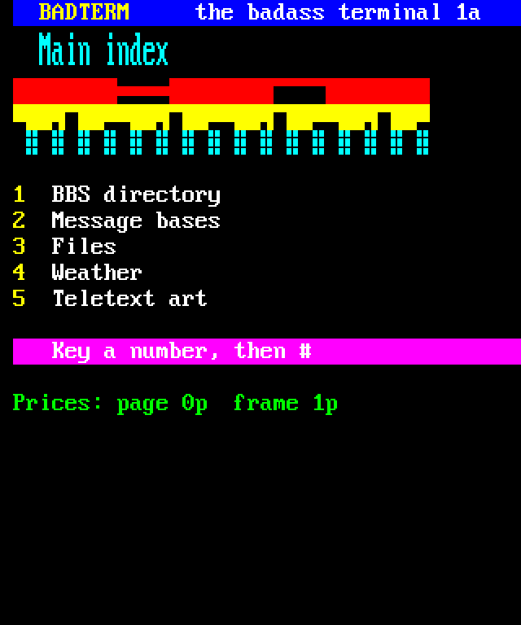
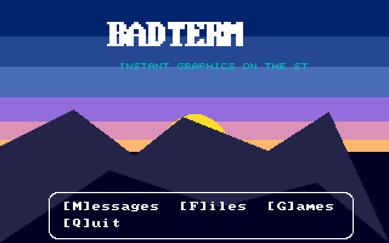
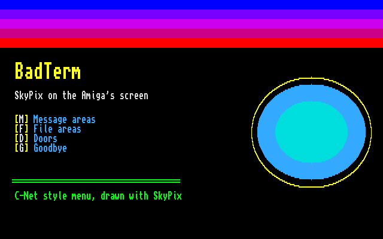
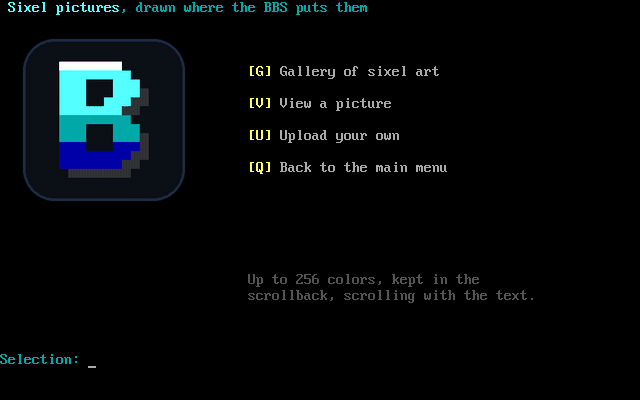
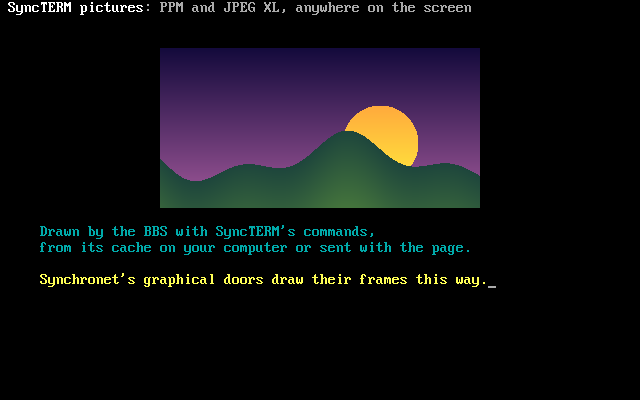
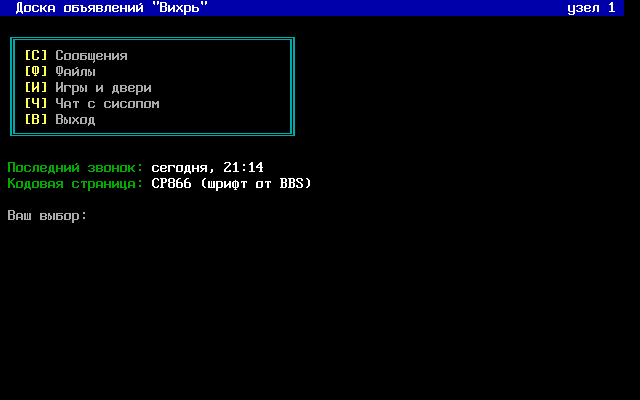
Also BBC Micro Mode 7, AVATAR (AVT/0+) for Opus and Maximus boards, the Amiga's Topaz and MicroKnight fonts, and UTF-8.
03 · Screens
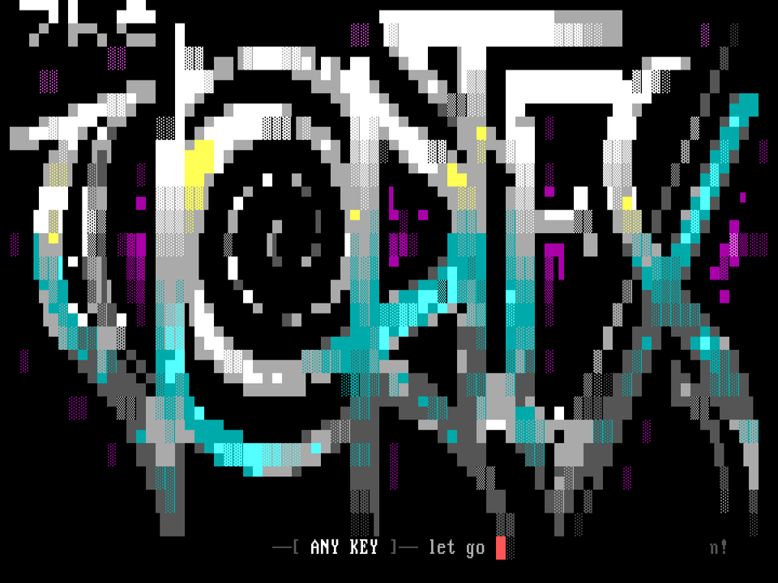
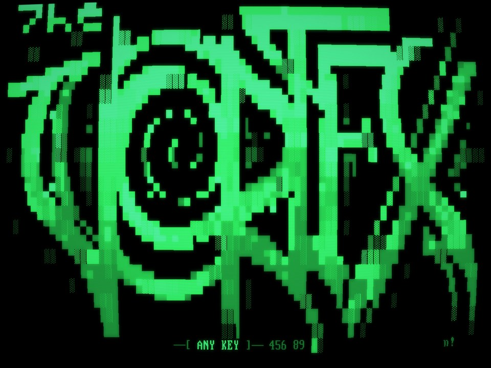
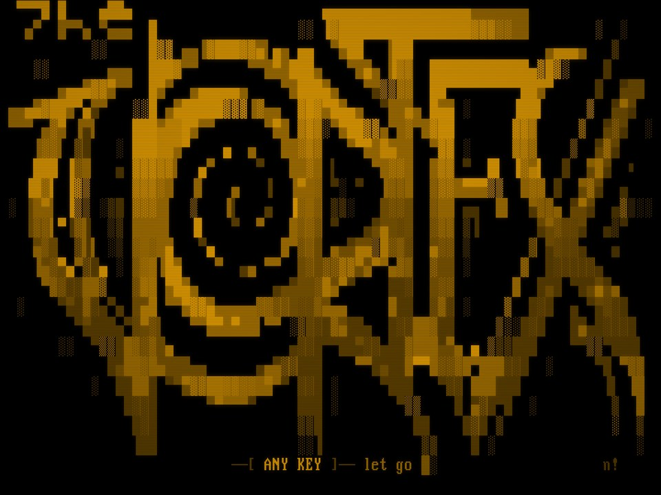
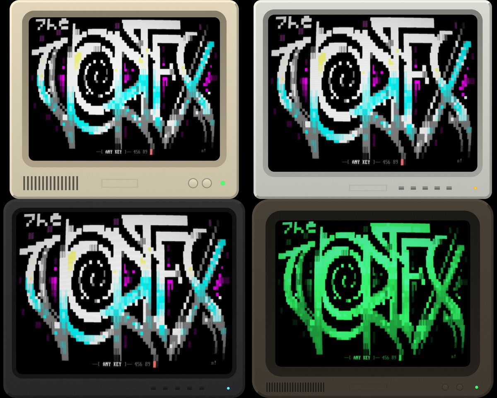
The dialing directory and dialogs are drawn with the same CP437 characters as the BBSes themselves.
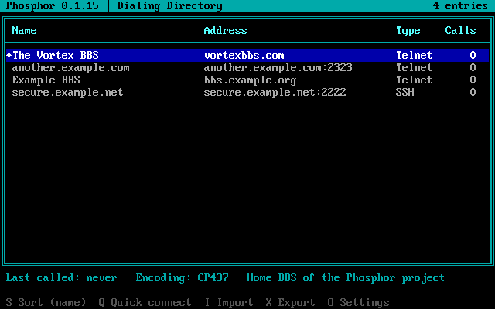
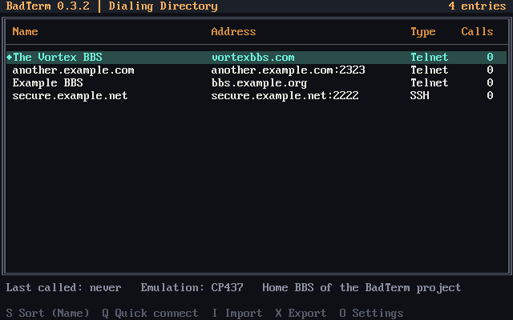
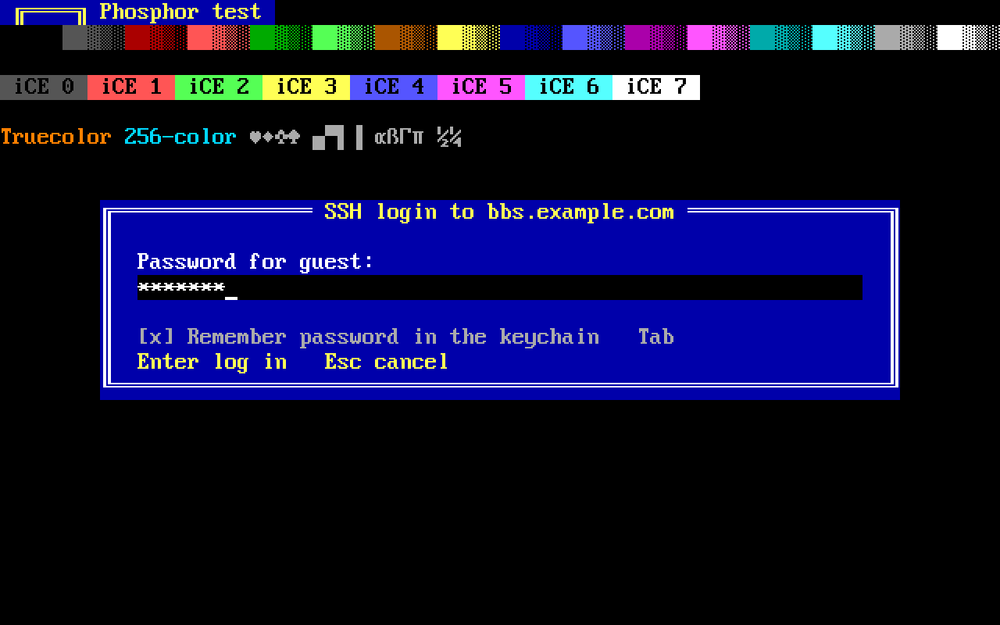
04 · Download
Version 0.3. Free, with no account needed.
The installer adds BadTerm to the Start menu and opens telnet:// links with it. The zip has just badterm.exe, to run from anywhere. Both are code signed.A zip with badterm.exe. Unzip it and run it; nothing to install.
The MSI is for installing BadTerm on many PCs at once (Intune, Group Policy): for everyone, with no questions.
A disk image: drag BadTerm to Applications. Signed and notarized by Apple, so it opens like any other app.
Packages for Debian and Ubuntu (.deb) and Fedora, RHEL and openSUSE (.rpm), or an AppImage that runs on most distributions (chmod +x it).An AppImage that runs on most distributions (chmod +x it), or a tarball with the bare program.
With Rust installed, on any of the three:
cargo install badtermEvery version is on the releases page, with SHA-256 checksums.
05 · Call in
The Vortex BBS is where BadTerm lives. Call in, say hello, and tell us what to build next.